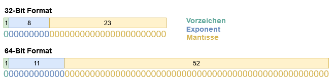

Kommazahlen werden im Computer meist anders dargestellt als ganze Zahlen. Der Grund liegt darin, dass für die Darstellung einer Zahl jeweils nur eine feste Anzahl von Bits, z.B. 32, zur Verfügung steht.
Mit 32 Bit lassen sich die ganzen Zahlen im Bereich { -231, ..., +231-1 } = { -2.147.483.648, ..., +2.147.483.647 } darstellen. Um eine Kommazahl darzustellen, kann man nun die Ziffern vor dem Komma und die Ziffern nach dem Komma jeweils als ganze Zahlen auffassen und mit jeweils 32 Bit speichern. Das Ergebnis ist eine 64 Bit lange sogenannte Festkommazahl (engl.: fixed point number). Nachteilig ist jedoch, dass sich in 64-Bit-Festkomma-Darstellung keine betragsmäßig sehr großen oder sehr kleinen Zahlen darstellen lassen, etwa die Masse der Sonne oder die Masse des Elektrons, da diese Zahlen so viele Stellen vor oder nach dem Komma haben, dass diese abgeschnitten würden. Es wird daher für Kommazahlen eine andere Form der Darstellung verwendet.
Idee 💡
Jede Zahl z lässt sich in der Form z = m · be darstellen. Hierbei sind m die Mantisse, b die Basis der Zahlendarstellung und e der Exponent. Im dezimalen Zahlensystem ist b = 10. Dies ist die "wissenschaftliche Notation", wie sie auch auf Taschenrechnern gebräuchlich ist.
Beispiele:
- Die Zahl 487 lässt sich als 4,87 · 102 schreiben mit 4,87 als Mantisse, 10 als Basis und 2 als Exponent.
- Die Zahl 0,000007 lässt sich als 7,0 · 10-6 schreiben.
- Die Zahl -12,55 lässt sich als -1,255 · 101 schreiben.
- Die Zahl 3,5 lässt sich als 3,5 · 100 schreiben.
- Die Zahl 12000000 lässt sich als 1,2 · 107 schreiben.
Offenbar lässt sich 3,5 auch als 350 · 10-2 oder als 0,35 · 101 schreiben. Die Darstellung ist also nicht eindeutig, das Komma kann in der Mantisse hin und her "gleiten", wobei sich der Exponent jeweils ändert. Aus diesem Grund heißt eine in wissenschaftlicher Notation dargestellte Zahl auch Gleitkommazahl (engl.: floating point number).
Eine eindeutige Form lässt sich dadurch erreichen, dass man das Komma in der Mantisse soweit nach vorn oder hinten gleiten lässt und den Exponenten entsprechend anpasst, bis vor dem Komma genau eine Ziffer ≠ 0 steht. Dabei lässt sich jede Zahl außer der Null in normalisierte Gleitkommadarstellung bringen.
Definition: Eine Gleitkommazahl heißt normalisiert, wenn die Mantisse vor dem Komma genau eine Ziffer ≠ 0 enthält.
Der Vorteil der Gleitkommadarstellung besteht darin, dass alle Zahlen mit derselben relativen Genauigkeit dargestellt werden, sowohl betragsmäßig sehr kleine als auch sehr große Zahlen. Wenn bei der sehr kleinen Zahl 1,23456789 · 10-12 die letzte Ziffer aufgerundet wird, entsteht ein prozentual genauso großer Fehler, wie wenn bei der sehr großen Zahl 1,23456789 · 1014 die letzte Ziffer aufgerundet wird.
Gleitkommadarstellung im IEEE-Format
Das Institute of Electrical and Electronics Engineers (kurz IEEE, meist englisch "i triple e" ausgesprochen) hat eine Norm entwickelt, wie Gleitkommazahlen dargestellt bzw. gespeichert werden. Das ist sowas wie die Norm DIN A4 in Deutschland für Papier - nur eben jetzt für die Darstellung einer Gleitkommazahl im binären Zahlensystem.
Im Computer werden Zahlen zur Basis 2 dargestellt (= im binären Zahlensystem, siehe Computersprache). Entsprechend ist die Basis b = 2, und die Mantisse m und der Exponent e werden als Binärzahlen dargestellt. Im IEEE-Format (IEEE-Norm 754) ist zunächst die Anzahl der Bits festgelegt, mit denen Mantisse und Exponent jeweils dargestellt werden. Es gibt zwei Varianten: das einfach genaue Format mit insgesamt 32 Bit und das doppelt genaue Format mit insgesamt 64 Bit. Das Bild zeigt jeweils die Aufteilung der zur Verfügung stehenden Bits auf die Anteile Vorzeichen, Exponent und Mantisse.

Vorzeichen: Die Mantisse wird in Betrag-Vorzeichen-Darstellung gespeichert. D.h. wenn die Mantisse negativ ist, ist dies daran zu erkennen, dass das Vorzeichen-Bit 1 ist. Im Mantissenfeld steht der (positive) Betrag der Mantisse.
Mantisse; Im IEEE-Format werden die Gleitkommazahlen grundsätzlich normalisiert gespeichert, wenn dies möglich ist. Nicht möglich ist dies, wenn durch das Gleiten des Kommas der Exponent so groß oder so klein wird, dass er nicht mehr mit den zur Verfügung stehenden Bits darstellbar ist. Normalisiert heißt, dass in der Mantisse vor dem Komma genau eine Ziffer ≠ 0 steht. Im Binärsystem gibt es jedoch nur eine einzige Ziffer ≠ 0, dies ist die 1. Da also jede normalisierte binäre Mantisse mit einer 1 beginnt, braucht diese 1 nicht gespeichert zu werden. Tatsächlich wird im IEEE-Format die 1 vor dem Komma nicht explizit gespeichert, sondern sozusagen implizit angenommen. Nur die Nachkommastellen der Mantisse werden gespeichert.
Exponent: Der Exponent wird in sogenannter Verschiebungs-Darstellung (engl.: biased representation) gespeichert. Aus dem dargestellten Binärwert des Exponenten wird der tatsächliche Wert des Exponenten durch Subtraktion einer Verschiebedistanz ("Bias") gewonnen. Beim einfach genauen Format beträgt diese Verschiebedistanz 127. Mit 8 Bit sind die Binärwerte {0, ..., 255} darstellbar; die Werte 00000000 = 0 und 11111111 = 255 sind reserviert; aus den verbleibenden Werten {1, ..., 254} ergibt sich nach Subtraktion der Verschiebedistanz der tatsächliche Wertebereich des Exponenten {-126, ..., 127}. Somit sind auch negative Exponenten möglich. Das folgende Diagramm zeigt den Ablauf der Umrechnung:
| Bitfolge | auswerten | Binärwert | 127 subtrahieren | tatsächlicher Exponent |
| 01111101 | → | 125 | → | -2 |
Spezialwerte
Denormalisierte Zahlen und Null
Ein Sonderfall tritt auf, wenn der Exponent nur aus Nullen besteht. Dann wird bei der Mantisse keine implizite 1 vor dem Komma angenommen, sondern eine implizite 0. Zum Ausgleich beträgt der tatsächliche Wert des Exponenten in diesem Fall nicht -127, sondern -126. Auf diese Weise lassen sich noch betragskleinere Zahlen darstellen, bis hin zur 0. Die Zahl 0 wird also dargestellt durch lauter Nullen im Exponenten und lauter Nullen in der Mantisse; das Vorzeichen kann + oder - sein. Zahlen mit lauter Nullen im Exponenten werden als denormalisierte Zahlen bezeichnet.
Der Wert Null entspricht übrigens nicht der Zahl 0, sondern steht für das englische "Null" = Leer, Nichts. Wenn du zum Beispiel eine Variable vom Typ String deklarierst, aber ihr keinen Wert zuweist, dann hat sie den Wert Null. Das Wort Null ist uns auch bereits begenet und zwar bei der NullPointerExeption im Abschnitt Debugging.
Unendlich (Infinity)
Ein weiterer Sonderfall tritt auf, wenn der Exponent nur aus Einsen besteht. Besteht die Mantisse nur aus Nullen, so ist der Wert der dargestellten Zahl +∞ oder -∞, je nach Vorzeichenbit. Das Ergebnis +∞ ergibt sich, wenn eine positive Zahl durch 0 dividiert wird, oder bei einem Exponentenüberlauf.
NaN
Besteht der Exponent nur aus Einsen und enthält die Mantisse Einsen, so ist der Wert der dargestellten Zahl NaN (not a number).
Dieser Wert ergibt sich u.a. als Ergebnis einer undefinierten Rechenoperation, wie z.B. 0/0 oder ∞ – ∞.
Übersicht
Die folgende Tabelle gibt eine Übersicht über die Darstellung verschiedener 32-Bit-Gleitkommazahlen.
| 32-Bitdarstellung | Wert |
|---|---|
| 0 0000 0000 000 0000 0000 0000 0000 0000 | +0 |
| 1 0000 0000 000 0000 0000 0000 0000 0000 | -0 |
| 0 0111 1111 000 0000 0000 0000 0000 0000 | 1.0·20 = 1 |
| 0 0111 1110 100 0000 0000 0000 0000 0000 | 1.1·2-1 = 0,75 |
| 0 0111 1101 100 1100 1100 1100 1100 1101 | 1.10011·2-2 = 0,4 |
| 1 1000 0000 000 0000 0000 0000 0000 0000 | -1.0·21 = -2 |
| 0 1000 0011 010 0100 0000 0000 0000 0000 | 1.01001·24 = 1,28125·16 = 20,5 |
| 0 0000 0000 110 0000 0000 0000 0000 0000 | 0.11·2-126 (denormalisierte Zahl) |
| 0 1111 1111 000 0000 0000 0000 0000 0000 | +∞ |
| 1 1111 1111 000 0000 0000 0000 0000 0000 | -∞ |
| ? 1111 1111 010 0110 0000 0000 0000 0100 | NaN |
Doppelt genaues Format
Das einfach genaue Format erlaubt lediglich eine Genauigkeit der Darstellung von ca. 7 Dezimalstellen. Dies ist relativ wenig; bei einer Zahl wie 12.345,678 ist die dritte Stelle nach dem Komma schon ungenau. Überlege doch mal: Was würde passieren, wenn ich eine sehr kleine Zahl zu einer sehr großen Zahl addiere? Richtig, die kleine Zahl würde wahrscheinlich weit mehr als 7 Dezimalstellen hinter dem Komma stehen. Sprich - ich kann mir diese Rechenoperation eigentlich sparen. Auf diese Weise geht Genauigkeit bei Rechenoperationen verloren.
Daher gibt es das doppelt genaue Format. Beim doppelt genauen Format werden die Zahlen mit 64 Bit dargestellt. Die Länge des Exponenten ist 11 Bit, die Länge der Mantisse ist 52 Bit. Der Bias des Exponenten beträgt 1023. Die Genauigkeit der Darstellung entspricht ca. 16 Dezimalstellen. Heutzutage sind Speicherplatz und Rechenleistung so reichlich vorhanden, dass nur noch das doppelt genaue Format verwendet werden sollte (Typ double in Programmiersprachen → Arten von Datentypen).
Zusammenfassung
- Gleitkommazahlen werden im IEEE-Format gespeichert.
- Gleitkommazahlen bestehen aus aus Mantisse, Basis und Exponent: z = m · be
- Die Basis hat den Wert des verwendeten Zahlensystems, also z.B. 10 im Dezimalsystem und 2 im Binärsystem
- Gleitkommzahlen im IEEE-Format sind normalisiert, das bedeutet, dass in der Mantisse vor dem Komma genau eine Ziffer ≠ 0 enthält.
- Im IEEE-Format (Binärsystem) wird die Zahl vor dem Komma nicht gespeichert, weil es außer der 0 nur die 1 gibt und damit die 1 implizit angenommen wird.
- Zahlen werden im Computer im Binärsystem gespeichert.
- Aufbau einer IEEE-Gleitkommazahl...
- ... mit 32 Bit: Vorzeichen = 1 Bit, Exponent 8 Bits, Mantisse 23 Bits.
- ... mit 64 Bit: Vorzeichen = 1 Bit, Exponent 11 Bits, Mantisse 52 Bits.